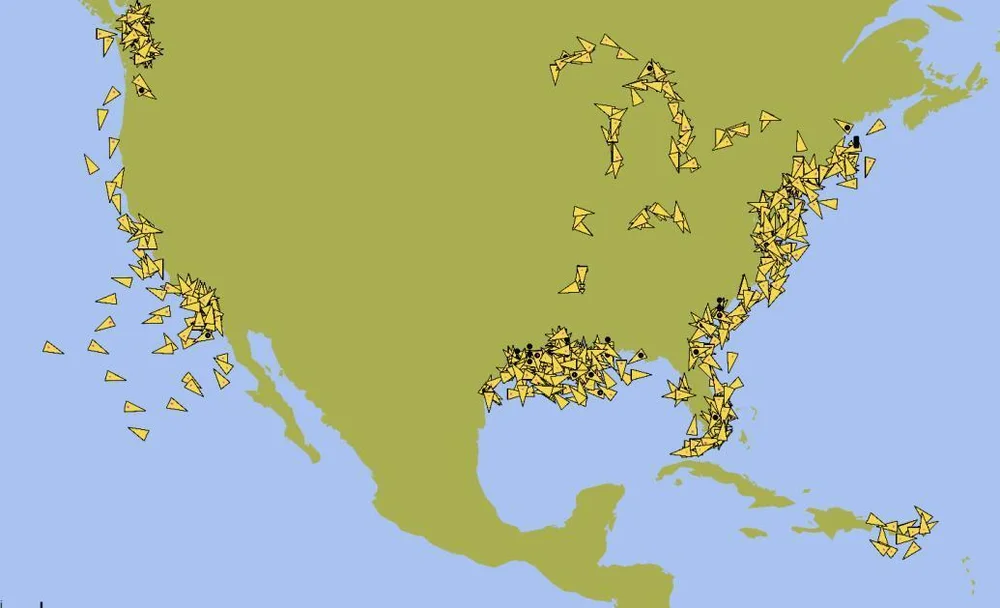
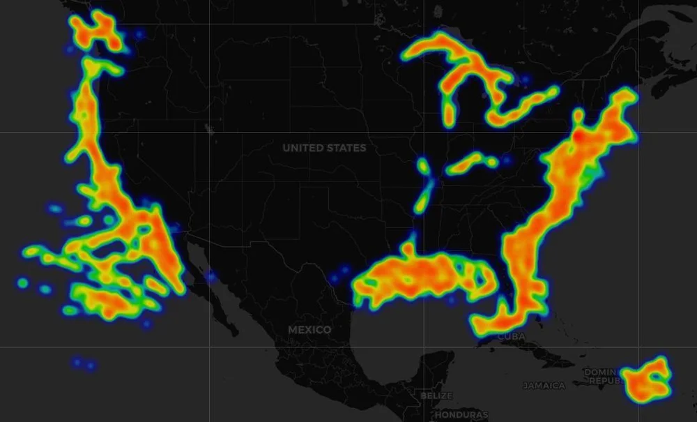
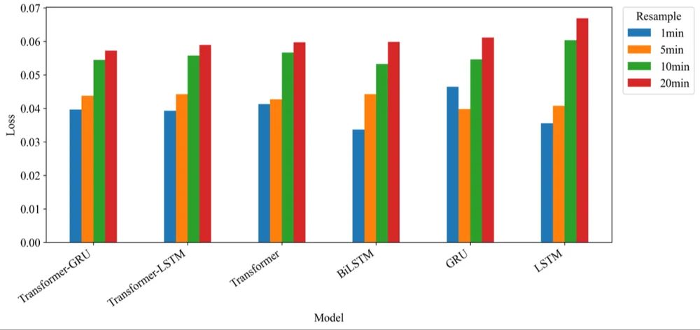
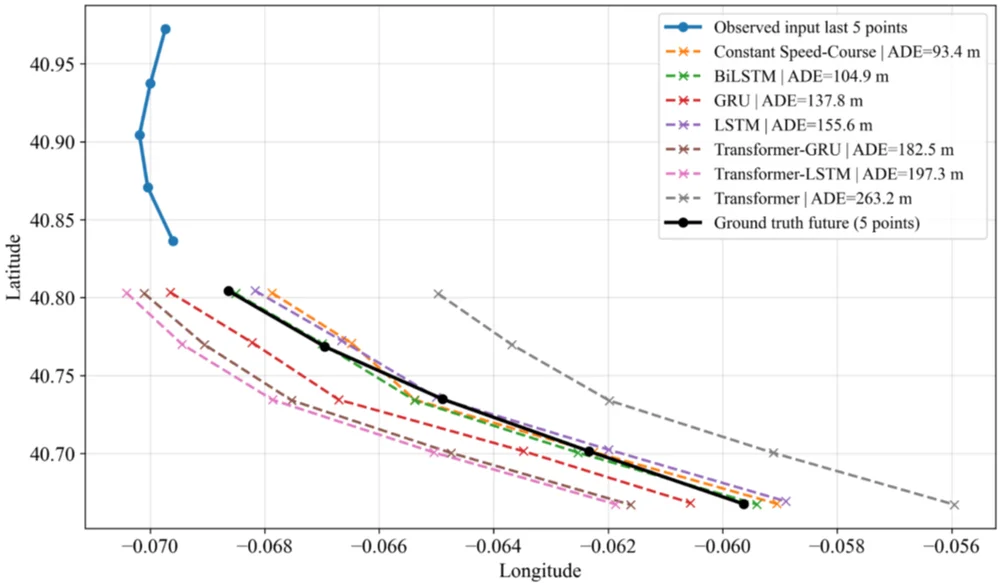

AIS messages arrive at irregular times, so trajectories are resampled onto a fixed grid before training. The grid spacing is usually chosen once and never questioned. This study treats it as the experimental variable.
Intervals41, 5, 10, 20 min
Methods6 + 1deep models + baseline
Evaluation dates3Apr, Aug, Dec 2025
Runs per setting5different seeds, 95% CI
Error grows
ADE, RMSE and training loss rise for every model as the interval gets longer.
Rankings change
GRU leads at 1 min; Transformer-GRU leads at 20 min on all three dates.
Simple can win
A constant speed-course baseline beats every network at some 5 and 10 min settings.
1 · Introduction
Why Vessel Trajectory Prediction, and Why AIS?
The Automatic Identification System broadcasts time-stamped LAT, LON, SOG, COG, heading and vessel identity. It feeds traffic monitoring, collision avoidance, port management and autonomous navigation.
But AIS trajectories are irregular, noisy and incomplete, and depend on vessel type, manoeuvres and traffic density. Every preprocessing decision shapes what a model can learn.
The literature so far
Recurrent: LSTM, GRU, BiLSTM, Seq2Seq
Attention and Transformer models
Hybrid: CNN-LSTM-SE, TCN-GRU, U-Net
Graph models: GAT-LSTM, ST-MGT, VTP-STGMAN
Gap. Studies resample AIS at different intervals, but treat the interval as a fixed preprocessing decision. When two papers disagree, is it the architecture or the temporal representation?
1 · Introduction
Contributions
Controlled framework
Same preprocessing rules, model configurations, prediction structure and evaluation protocol; only the resampling interval changes.
Beyond accuracy
Shows that resampling changes model ranking, robustness, and the balance between learned and deterministic methods.
Benchmark
Recurrent, Transformer, hybrid and physics-based predictors under identical conditions, five seeds each, on three dates.
Practical guidance
How to choose a predictor for a given AIS sampling rate and computational budget.
2 · Material and Methods
NOAA AIS Data Handler Archive
Three 24-hour datasets: 30 April, 31 August and 31 December 2025. The December file illustrates the pipeline:
AIS records8,518,66717 attributes
Unique MMSI17,35715,101 vessel names
LAT 1.09° to 85.02°, LON −161.91° to 145.98°: very wide coverage
SOG 0–99.5 kn, mean 1.77 kn: many anchored, moored or slow vessels
The models rely on LAT, LON, SOG and COG, which are complete or almost complete. The gaps are in static and auxiliary fields.
2 · Material and Methods
Validation: Replay and Heatmap

Fig. 1 · Custom replay simulator → OpenCPN

Fig. 2 · Spatial density of AIS positions
Valid records are encoded as NMEA 0183 AIS Message Type 1 (AIVDM) sentences and sent over UDP to OpenCPN.
Targets appear on the Pacific and Atlantic coasts, the Gulf of Mexico, the Great Lakes and the Caribbean; the heatmap shows the same corridors.
This checks message format and spatial consistency only, not prediction accuracy.
2 · Material and Methods
Filtering: Keep the Vessels That Really Move
1. Required fields. MMSI, BaseDateTime, LAT, LON found case-insensitively; rows missing any of them dropped. Sort by MMSI and time.
2. Consecutive distances with the Haversine great-circle formula:
d = 2R · arcsin √( sin²(Δφ/2) + cos φ1 · cos φ2 · sin²(Δλ/2) ) (1)
3. Noise and outliers. Steps shorter than 20 m ignored (GPS jitter); transitions faster than 60 kn removed.
4. Rank by movement. Valid step lengths summed per vessel; the top 1,000 vessels by cumulative distance are kept, balancing trajectory richness and computing cost.
2 · Material and Methods
Building the Multi-Resolution Datasets
Segmentsplit tracks at unrealistic jumps and gaps
→
Resamplemean LAT, LON, SOG, COGsin, COGcos per bin
→
Filllinear interpolation, then forward / backward fill
→
DifferencesΔLAT, ΔLON from the previous step
→
Windows10 steps in → 1 step out
Input features
ΔLAT, ΔLON, SOG, COG_sin, COG_cos
Target
ΔLAT, ΔLON
Intervals
1, 5, 10, 20 min
Sequence
10 in, 1 out, stride 1
Valid SOG / COG
0–60 kn / 0°–360°
Split
70 / 15 / 15% by segment
Normalization
z-score with training statistics only
Models learn movement increments, not absolute coordinates. Segments (MMSI + segment_id) are split before windowing, so no segment contributes to two subsets: no leakage.
2 · Material and Methods
Why COG Becomes (sin, cos)
Course A
Course B
Course is circular: 359° and 1° are 2° apart, not 358°. Averaging raw degrees inside a resampling bin, or feeding them to a network, breaks at the 0°/360° boundary. Sine and cosine components are continuous everywhere, so they are averaged and used as inputs instead.
2 · Material and Methods · Illustration
What the Resampling Interval Does to a Track
Interval
true path (synthetic)10 input stepsnext point = targetconstant speed-course step
A synthetic 12 kn track drawn for intuition, not data from the paper. Note how one "step" means more real time and more history as the interval grows.
2 · Material and Methods · Table 2
Sample Sizes per Interval (31 December)
Interval
Vessels
Segments
Train windows
Validation
Test
1 min
998
2,271
578,042
121,675
122,014
5 min
998
1,749
105,186
22,867
20,077
10 min
998
1,387
45,989
10,180
9,991
20 min
996
1,110
18,711
3,998
4,007
Fewer windows
From 1 to 20 min the training set shrinks about 31× (578,042 → 18,711 windows).
Fewer segments
Short segments cannot fill 10 + 1 coarse steps, so they drop out: 2,271 → 1,110.
2 · Material and Methods
Six Learned Models and One Physics Baseline
Recurrent
LSTM, GRU (fewer gates), BiLSTM (both directions)
hidden 128, 2 layers, dropout 0.1
last hidden state → linear head → (ΔLAT, ΔLON)
Transformer
input projection + sinusoidal positions
encoder–decoder, causal mask in the decoder
d = 128, 8 heads, feed-forward 256, dropout 0.1
Hybrid
Transformer-LSTM / Transformer-GRU
recurrent branch: hidden 32, 3 layers, projected to d = 128
concatenated with encoder output → fusion layer → decoder memory
Constant speed-course baseline: no parameters; moves the last position one step with the last SOG and COG.
2 · Material and Methods · Table 3
Training Protocol and Model Complexity
Adam, learning rate 0.001, MSE loss
Batch 1024, 100 epochs
5 independent runs per date and interval, different seeds
Checkpoint with the lowest validation MSE goes to the test set
Split, normalization and hyperparameters fixed across runs
Laptop: i5-12450H, 16 GB, RTX 3050 6 GB, Windows 11
Model
Parameters
Train (min)
Inference (ms)
GRU
167,298
12.67
0.3819
LSTM
217,474
15.21
0.3969
BiLSTM
565,634
22.32
0.4293
Transformer
1,988,866
151.81
8.8105
Transformer-GRU
2,054,210
152.07
9.1378
Transformer-LSTM
2,063,618
151.27
9.1580
CS-C baseline
0
–
–
Transformer-based models carry about 12× the parameters of GRU, train about 12× longer and infer about 24× slower. Accuracy has to justify that.
2 · Material and Methods
Evaluation Metrics
Predicted ΔLAT, ΔLON are de-normalized and added to the last observed position; the error di is the Haversine distance (R = 6,371,000 m) to the true position.
ADE
ADE = (1/N) Σ di
Mean spatial error. With a one-step horizon it equals the Haversine MAE.
RMSE
RMSE = √( (1/N) Σ di² )
Squares the errors first, so large misses weigh more.
95% CI
x̄ ± t0.975, n−1 · s / √n
n = 5 runs, t ≈ 2.776. Only for learned models: the baseline has no seed variation.
Training loss (normalized MSE) describes optimization; ADE and RMSE in metres are the main comparison.
3 · Results · Fig. 3
Training Loss Rises with the Interval

Coarser sampling breaks motion continuity: the 10 and 20 min losses are clearly higher.
At 20 min: Transformer-GRU lowest, then Transformer-LSTM and Transformer; LSTM highest.
BiLSTM is lowest at 1 min but degrades noticeably at 10 and 20 min.
3 · Results · Tables 4–8
Results Explorer: ADE and RMSE
MetricDate
Intervallearned modelconstant speed-course
3 · Results · Tables 4, 6, 7
The Interval Changes Who Wins
DateRank by mean ADE; hover a line.
Rank #1 moves between GRU, BiLSTM, Transformer-GRU and the baseline depending on the interval and date. Comparing models trained at different sampling rates is therefore not a fair comparison.
3 · Results
Best Learned Model vs Constant Speed-Course (ADE, m)
Date
1 min
5 min
10 min
20 min
Where it wins
At 5 and 10 min, if motion is smooth and nearly linear, extrapolating speed and course is enough, with no training and negligible cost.
Where it breaks
At 20 min its error jumps (775.8–915.3 m) because the fixed-motion assumption fails over long gaps.
On 30 April at 5 min Transformer-GRU is ahead by only 0.10 m (195.10 vs 195.20).
3 · Results · Table 9
Are the Differences Real? 95% Confidence Intervals
DateInterval
Orange band: the best model's interval. Dashed line: the deterministic baseline. Overlap means a lower mean is not automatically a significant win.
3 · Results · Table 10
Interpolation: Frequent but Small vs Rare but Large
10% of observed interior points were masked and rebuilt by the same linear interpolation, five times per interval; the error is the Haversine distance to the true point.
At 1 min, 19.18% of bins are interpolated, yet the mean error is only 22.96 m. At 20 min just 0.45% are, but the mean error reaches 644.78 m and the 95th percentile 3.4 km. Interpolation and sampling interval must be judged together.
3 · Results · Figs. 6–7
Rolling One-Step Predictions on Real Tracks
Interval

One example each, not statistically representative. Similar ADE can hide different behaviour: lateral offset, directional bias or over-extension.
4 · Discussion
Why Transformer-GRU Holds Up at Coarse Intervals
Attention for long gaps
Self-attention weights the most informative past steps even when observations are far apart.
A compact recurrent branch
The small GRU branch stabilizes local motion. LSTM's extra gates bring no benefit when the coarse data carry little detail.
Recurrent models need continuity
Standalone LSTM, GRU and BiLSTM rely on step-to-step state; large displacements per step weaken it.
No universal winner
Dense, smooth data favour simple recurrent models or even the baseline; sparsity favours the hybrid.
Limitation. With 10 inputs and one step ahead, the interval also changes the horizon (1, 5, 10, 20 min) and the history (10, 50, 100, 200 min). Cross-interval differences are the combined effect of representation, horizon and context, so rankings are read within each interval.
5 · Conclusions
Conclusions and Future Work
The resampling interval is a critical experimental factor: error rises consistently from 1 to 20 min.
It changes not only the error but the ranking of models. GRU leads at 1 min (49.98 ± 6.61 m across dates); Transformer-GRU leads at 20 min on every date (681.87 ± 45.00 m).
Overlapping confidence intervals mean a lower mean is not automatically a significant win.
The constant speed-course baseline is a real option for smooth motion and tight compute budgets.
A model validated at one AIS sampling rate should not be assumed to perform the same at another.
Next steps
Multi-day and multi-region datasets; vessel-type-specific behaviour
Adaptive temporal representations driven by speed, manoeuvres and traffic density
5 · Conclusions
Check Questions
Why is COG encoded as sine and cosine before resampling?
Why are trajectory segments split into train / validation / test before the sliding windows are built?
Comparing a 1 min model with a 20 min model is not only about sampling density. What else changes?
The baseline wins at 10 min on 31 December but is far behind at 20 min. Why?
Interpolation is needed in 19% of bins at 1 min but only 0.45% at 20 min. Why is the 20 min data still less reliable?
Show answers
Course is circular; averaging or comparing raw degrees fails across 0°/360°. (sin, cos) is continuous everywhere.
Overlapping windows from one segment would otherwise appear in both training and test sets and leak information.
The real prediction horizon (1 vs 20 min) and the history covered by 10 steps (10 vs 200 min).
Over 10 minutes the smooth tracks are nearly linear; over 20 minutes course and speed changes accumulate and the fixed-motion assumption fails.
Each interpolated point bridges a much longer temporal and spatial gap: mean error 644.78 m vs 22.96 m.
References
Selected References
Li, H., Jiao, H., & Yang, Z. (2023). AIS data-driven ship trajectory prediction modelling and analysis based on machine learning and deep learning methods. Transportation Research Part E, 175, 103152.
Park, J., Jeong, J., & Park, Y. (2021). Ship trajectory prediction based on Bi-LSTM using spectral-clustered AIS data. JMSE, 9(9), 1037.
Nguyen, D., & Fablet, R. (2024). A transformer network with sparse augmented data representation and cross entropy loss for AIS-based vessel trajectory prediction. IEEE Access, 12, 21596–21609.
Bao, K. et al. (2022). An improved ship trajectory prediction based on AIS data using MHA-BiGRU. JMSE, 10(6), 804.
Liu, R. W., Zheng, W., & Liang, M. (2024). Spatio-temporal multi-graph transformer network for joint prediction of multiple vessel trajectories. EAAI, 129, 107625.
NOAA Office for Coastal Management. AIS Data Handler archive.
See the full text for the complete reference list.
Thank You
Impact of Temporal Resampling Interval on Deep Learning-Based Vessel Trajectory Prediction Using AIS Data
How to cite: Külcü, S., & Kondiloğlu, A. (2026). Impact of temporal resampling interval on deep learning-based vessel trajectory prediction using AIS data. Gümüşhane University Journal of Science, 16(4), 1160–1178. doi:10.17714/gumusfenbil.1943803